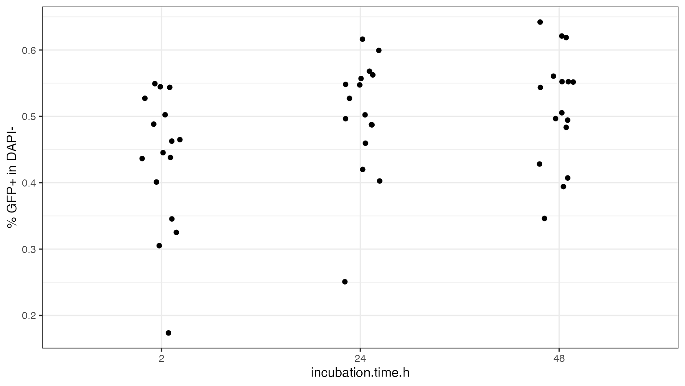
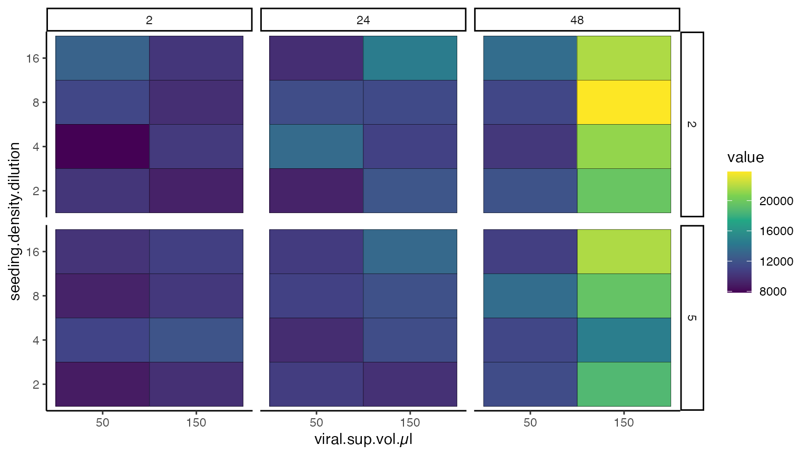

import data from fj workspaces
import_data_from_fj_workspaces.RmdInstall necessary packages in RStudio:
install.packages("BiocManager")
BiocManager::install("flowCore")
BiocManager::install("flowWorkspace")
BiocManager::install("CytoML")
install.packages("devtools")
devtools::install_github("Close-your-eyes/fcexpr")
library(fcexpr)The actual work for importing the data from flowjo workspaces is done by functions from CytoML and flowWorkspace. The function that I wrote, ws_get_popstats, is rather a wrapper around them. On the other hand ws_get_popstats handles the necessary loops for multiple workspaces (ws) and or multiple groups (gr) internally. So, it is beginner friendly. Moreover, a problem of mine with the subset argument of CytoML::flowjo_to_gatingset is handled by modifying the function. But these are only details from the backend.
We start with a minimal experiment folder. FCS files and a sampledescription.xlsx have already been synchronized.
A renal epithelial cell line (RPTEC) has been retrovirally transduced with GFP. Cells have then analyzed by flow cytometry. Factors have been varied (see below) that may or may not impact the transduction rate. Which and how? - This is what we want to know.
list.files(wd)
#> [1] "FCS_files" "FJ_workspace"
#> [3] "R_scripts" "sampledescription.xlsx"
list.files(wd, recursive = T)
#> [1] "FCS_files/Exp_part_3/0001_-_vol.50_time.2_polybrene.10_EGF.50_FCS.2_density.16.fcs"
#> [2] "FCS_files/Exp_part_3/0002_-_vol.50_time.2_polybrene.10_EGF.50_FCS.2_density.8.fcs"
#> [3] "FCS_files/Exp_part_3/0003_-_vol.50_time.2_polybrene.10_EGF.50_FCS.2_density.4.fcs"
#> [4] "FCS_files/Exp_part_3/0004_-_vol.50_time.2_polybrene.10_EGF.50_FCS.2_density.2.fcs"
#> [5] "FCS_files/Exp_part_3/0005_-_vol.50_time.2_polybrene.10_EGF.50_FCS.5_density.16.fcs"
#> [6] "FCS_files/Exp_part_3/0006_-_vol.50_time.2_polybrene.10_EGF.50_FCS.5_density.8.fcs"
#> [7] "FCS_files/Exp_part_3/0007_-_vol.50_time.2_polybrene.10_EGF.50_FCS.5_density.4.fcs"
#> [8] "FCS_files/Exp_part_3/0008_-_vol.50_time.2_polybrene.10_EGF.50_FCS.5_density.2.fcs"
#> [9] "FCS_files/Exp_part_3/0009_-_vol.50_time.24_polybrene.10_EGF.50_FCS.2_density.16.fcs"
#> [10] "FCS_files/Exp_part_3/0010_-_vol.50_time.24_polybrene.10_EGF.50_FCS.2_density.8.fcs"
#> [11] "FCS_files/Exp_part_3/0011_-_vol.50_time.24_polybrene.10_EGF.50_FCS.2_density.4.fcs"
#> [12] "FCS_files/Exp_part_3/0012_-_vol.50_time.24_polybrene.10_EGF.50_FCS.2_density.2.fcs"
#> [13] "FCS_files/Exp_part_3/0013_-_vol.50_time.24_polybrene.10_EGF.50_FCS.5_density.16.fcs"
#> [14] "FCS_files/Exp_part_3/0014_-_vol.50_time.24_polybrene.10_EGF.50_FCS.5_density.8.fcs"
#> [15] "FCS_files/Exp_part_3/0015_-_vol.50_time.24_polybrene.10_EGF.50_FCS.5_density.4.fcs"
#> [16] "FCS_files/Exp_part_3/0016_-_vol.50_time.24_polybrene.10_EGF.50_FCS.5_density.2.fcs"
#> [17] "FCS_files/Exp_part_3/0017_-_vol.50_time.48_polybrene.10_EGF.50_FCS.2_density.16.fcs"
#> [18] "FCS_files/Exp_part_3/0018_-_vol.50_time.48_polybrene.10_EGF.50_FCS.2_density.8.fcs"
#> [19] "FCS_files/Exp_part_3/0019_-_vol.50_time.48_polybrene.10_EGF.50_FCS.2_density.4.fcs"
#> [20] "FCS_files/Exp_part_3/0020_-_vol.50_time.48_polybrene.10_EGF.50_FCS.2_density.2.fcs"
#> [21] "FCS_files/Exp_part_3/0021_-_vol.50_time.48_polybrene.10_EGF.50_FCS.5_density.16.fcs"
#> [22] "FCS_files/Exp_part_3/0022_-_vol.50_time.48_polybrene.10_EGF.50_FCS.5_density.8.fcs"
#> [23] "FCS_files/Exp_part_3/0023_-_vol.50_time.48_polybrene.10_EGF.50_FCS.5_density.4.fcs"
#> [24] "FCS_files/Exp_part_3/0024_-_vol.50_time.48_polybrene.10_EGF.50_FCS.5_density.2.fcs"
#> [25] "FCS_files/Exp_part_3/0025_-_vol.150_time.2_polybrene.10_EGF.50_FCS.2_density.16.fcs"
#> [26] "FCS_files/Exp_part_3/0026_-_vol.150_time.2_polybrene.10_EGF.50_FCS.2_density.8.fcs"
#> [27] "FCS_files/Exp_part_3/0027_-_vol.150_time.2_polybrene.10_EGF.50_FCS.2_density.4.fcs"
#> [28] "FCS_files/Exp_part_3/0028_-_vol.150_time.2_polybrene.10_EGF.50_FCS.2_density.2.fcs"
#> [29] "FCS_files/Exp_part_3/0029_-_vol.150_time.2_polybrene.10_EGF.50_FCS.5_density.16.fcs"
#> [30] "FCS_files/Exp_part_3/0030_-_vol.150_time.2_polybrene.10_EGF.50_FCS.5_density.8.fcs"
#> [31] "FCS_files/Exp_part_3/0031_-_vol.150_time.2_polybrene.10_EGF.50_FCS.5_density.4.fcs"
#> [32] "FCS_files/Exp_part_3/0032_-_vol.150_time.2_polybrene.10_EGF.50_FCS.5_density.2.fcs"
#> [33] "FCS_files/Exp_part_3/0033_-_vol.150_time.24_polybrene.10_EGF.50_FCS.2_density.16.fcs"
#> [34] "FCS_files/Exp_part_3/0034_-_vol.150_time.24_polybrene.10_EGF.50_FCS.2_density.8.fcs"
#> [35] "FCS_files/Exp_part_3/0035_-_vol.150_time.24_polybrene.10_EGF.50_FCS.2_density.4.fcs"
#> [36] "FCS_files/Exp_part_3/0036_-_vol.150_time.24_polybrene.10_EGF.50_FCS.2_density.2.fcs"
#> [37] "FCS_files/Exp_part_3/0037_-_vol.150_time.24_polybrene.10_EGF.50_FCS.5_density.16.fcs"
#> [38] "FCS_files/Exp_part_3/0038_-_vol.150_time.24_polybrene.10_EGF.50_FCS.5_density.8.fcs"
#> [39] "FCS_files/Exp_part_3/0039_-_vol.150_time.24_polybrene.10_EGF.50_FCS.5_density.4.fcs"
#> [40] "FCS_files/Exp_part_3/0040_-_vol.150_time.24_polybrene.10_EGF.50_FCS.5_density.2.fcs"
#> [41] "FCS_files/Exp_part_3/0041_-_vol.150_time.48_polybrene.10_EGF.50_FCS.2_density.16.fcs"
#> [42] "FCS_files/Exp_part_3/0042_-_vol.150_time.48_polybrene.10_EGF.50_FCS.2_density.8.fcs"
#> [43] "FCS_files/Exp_part_3/0043_-_vol.150_time.48_polybrene.10_EGF.50_FCS.2_density.4.fcs"
#> [44] "FCS_files/Exp_part_3/0044_-_vol.150_time.48_polybrene.10_EGF.50_FCS.2_density.2.fcs"
#> [45] "FCS_files/Exp_part_3/0045_-_vol.150_time.48_polybrene.10_EGF.50_FCS.5_density.16.fcs"
#> [46] "FCS_files/Exp_part_3/0046_-_vol.150_time.48_polybrene.10_EGF.50_FCS.5_density.8.fcs"
#> [47] "FCS_files/Exp_part_3/0047_-_vol.150_time.48_polybrene.10_EGF.50_FCS.5_density.4.fcs"
#> [48] "FCS_files/Exp_part_3/0048_-_vol.150_time.48_polybrene.10_EGF.50_FCS.5_density.2.fcs"
#> [49] "FJ_workspace/07-Oct-2021.wsp"
#> [50] "R_scripts/script.R"
#> [51] "sampledescription.xlsx"| FileName | identity | Exp.part | viral.sup.vol.µl | incubation.time.h | polybrene.ug.ml | EGF.ng.ml | FCS.percent | seeding.density.dilution |
|---|---|---|---|---|---|---|---|---|
| 0001_-_vol.50_time.2_polybrene.10_EGF.50_FCS.2_density.16.fcs | Specimen_001_Tube_001_001.fcs_-100-_2021.02.18-11.20.06 | 3 | 50 | 2 | 10 | 50 | 2 | 16 |
| 0002_-_vol.50_time.2_polybrene.10_EGF.50_FCS.2_density.8.fcs | Specimen_001_Tube_002_002.fcs_-100-_2021.02.18-11.21.31 | 3 | 50 | 2 | 10 | 50 | 2 | 8 |
| 0003_-_vol.50_time.2_polybrene.10_EGF.50_FCS.2_density.4.fcs | Specimen_001_Tube_003_003.fcs_-100-_2021.02.18-11.23.08 | 3 | 50 | 2 | 10 | 50 | 2 | 4 |
| 0004_-_vol.50_time.2_polybrene.10_EGF.50_FCS.2_density.2.fcs | Specimen_001_Tube_004_004.fcs_-100-_2021.02.18-11.24.29 | 3 | 50 | 2 | 10 | 50 | 2 | 2 |
| 0005_-_vol.50_time.2_polybrene.10_EGF.50_FCS.5_density.16.fcs | Specimen_001_Tube_005_005.fcs_-100-_2021.02.18-11.25.11 | 3 | 50 | 2 | 10 | 50 | 5 | 16 |
| 0006_-_vol.50_time.2_polybrene.10_EGF.50_FCS.5_density.8.fcs | Specimen_001_Tube_006_006.fcs_-100-_2021.02.18-11.26.38 | 3 | 50 | 2 | 10 | 50 | 5 | 8 |
| 0007_-_vol.50_time.2_polybrene.10_EGF.50_FCS.5_density.4.fcs | Specimen_001_Tube_007_007.fcs_-100-_2021.02.18-11.28.01 | 3 | 50 | 2 | 10 | 50 | 5 | 4 |
| 0008_-_vol.50_time.2_polybrene.10_EGF.50_FCS.5_density.2.fcs | Specimen_001_Tube_008_008.fcs_-100-_2021.02.18-11.29.00 | 3 | 50 | 2 | 10 | 50 | 5 | 2 |
| 0009_-_vol.50_time.24_polybrene.10_EGF.50_FCS.2_density.16.fcs | Specimen_001_Tube_009_009.fcs_-100-_2021.02.18-11.29.50 | 3 | 50 | 24 | 10 | 50 | 2 | 16 |
| 0010_-_vol.50_time.24_polybrene.10_EGF.50_FCS.2_density.8.fcs | Specimen_001_Tube_010_010.fcs_-100-_2021.02.18-11.31.05 | 3 | 50 | 24 | 10 | 50 | 2 | 8 |
When we run an R-script which is saved in the R_script folder we can have our directory determined with an R command (only from RStudio). This command does not work in this tutorial, so it is commented (#).
# wd <- dirname(dirname(rstudioapi::getActiveDocumentContext()$path))Then we find all the flowjo workspaces in our folder and the groups in these workspaces.
# the pattern indicates that .wsp has to appear at the end of the file name (this is btw called a regular expression)
ws <- list.files(path = wd, pattern = "\\.wsp$", recursive = T, full.names = T)
basename(ws)
#> [1] "07-Oct-2021.wsp"
# to get the group names elegantly we can use functions from the CytoML package
# of course you can also enter the names by hand
gr <- unique(as.character(CytoML::fj_ws_get_sample_groups(CytoML::open_flowjo_xml(ws))$groupName))
gr
#> [1] "All Samples" "Exp_part_3"
# as we dont want the All Samples group we can remove it from gr
gr <- gr[-1]
gr
#> [1] "Exp_part_3"The gating for GFP positive events is straight forward.
Now we want to import the number of events in the gates. In this simple example we only have one workspace in ws and only one group in gr. But the procedure can also handle multiple ws and multiple gr.
ps.raw <- fcexpr::ws_get_popstats(ws = ws, gr = gr, FCS.file.folder = file.path(wd, "FCS_files"))
knitr::kable(head(ps.raw, 10))| FileName | PopulationFullPath | Population | Parent | Count | ParentCount | FractionOfParent | group | ws |
|---|---|---|---|---|---|---|---|---|
| 0001_-_vol.50_time.2_polybrene.10_EGF.50_FCS.2_density.16.fcs | /RPTECs | RPTECs | root | 475 | 500 | 95.00000 | Exp_part_3 | 07-Oct-2021.wsp |
| 0001_-_vol.50_time.2_polybrene.10_EGF.50_FCS.2_density.16.fcs | /RPTECs/DAPI- | DAPI- | /RPTECs | 422 | 475 | 88.84211 | Exp_part_3 | 07-Oct-2021.wsp |
| 0001_-_vol.50_time.2_polybrene.10_EGF.50_FCS.2_density.16.fcs | /RPTECs/DAPI-/GFP+ | GFP+ | /RPTECs/DAPI- | 212 | 422 | 50.23697 | Exp_part_3 | 07-Oct-2021.wsp |
| 0002_-_vol.50_time.2_polybrene.10_EGF.50_FCS.2_density.8.fcs | /RPTECs | RPTECs | root | 474 | 500 | 94.80000 | Exp_part_3 | 07-Oct-2021.wsp |
| 0002_-_vol.50_time.2_polybrene.10_EGF.50_FCS.2_density.8.fcs | /RPTECs/DAPI- | DAPI- | /RPTECs | 379 | 474 | 79.95781 | Exp_part_3 | 07-Oct-2021.wsp |
| 0002_-_vol.50_time.2_polybrene.10_EGF.50_FCS.2_density.8.fcs | /RPTECs/DAPI-/GFP+ | GFP+ | /RPTECs/DAPI- | 166 | 379 | 43.79947 | Exp_part_3 | 07-Oct-2021.wsp |
| 0003_-_vol.50_time.2_polybrene.10_EGF.50_FCS.2_density.4.fcs | /RPTECs | RPTECs | root | 475 | 500 | 95.00000 | Exp_part_3 | 07-Oct-2021.wsp |
| 0003_-_vol.50_time.2_polybrene.10_EGF.50_FCS.2_density.4.fcs | /RPTECs/DAPI- | DAPI- | /RPTECs | 369 | 475 | 77.68421 | Exp_part_3 | 07-Oct-2021.wsp |
| 0003_-_vol.50_time.2_polybrene.10_EGF.50_FCS.2_density.4.fcs | /RPTECs/DAPI-/GFP+ | GFP+ | /RPTECs/DAPI- | 148 | 369 | 40.10840 | Exp_part_3 | 07-Oct-2021.wsp |
| 0004_-_vol.50_time.2_polybrene.10_EGF.50_FCS.2_density.2.fcs | /RPTECs | RPTECs | root | 460 | 500 | 92.00000 | Exp_part_3 | 07-Oct-2021.wsp |
Then we want to join these counts with the meta data which are documented excellently in the sampledescription.xlsx. For that we use a function from the dplyr package. As we have previously synchronized the FCS file names and the FileName column in our sampledescription.xlsx, we can use this column to match (join) the meta data and the counts from flowjo (~phenotype data).
| FileName | identity | Exp.part | viral.sup.vol.µl | incubation.time.h | polybrene.ug.ml | EGF.ng.ml | FCS.percent | seeding.density.dilution |
|---|---|---|---|---|---|---|---|---|
| 0001_-_vol.50_time.2_polybrene.10_EGF.50_FCS.2_density.16.fcs | Specimen_001_Tube_001_001.fcs_-100-_2021.02.18-11.20.06 | 3 | 50 | 2 | 10 | 50 | 2 | 16 |
| 0002_-_vol.50_time.2_polybrene.10_EGF.50_FCS.2_density.8.fcs | Specimen_001_Tube_002_002.fcs_-100-_2021.02.18-11.21.31 | 3 | 50 | 2 | 10 | 50 | 2 | 8 |
| 0003_-_vol.50_time.2_polybrene.10_EGF.50_FCS.2_density.4.fcs | Specimen_001_Tube_003_003.fcs_-100-_2021.02.18-11.23.08 | 3 | 50 | 2 | 10 | 50 | 2 | 4 |
| 0004_-_vol.50_time.2_polybrene.10_EGF.50_FCS.2_density.2.fcs | Specimen_001_Tube_004_004.fcs_-100-_2021.02.18-11.24.29 | 3 | 50 | 2 | 10 | 50 | 2 | 2 |
| 0005_-_vol.50_time.2_polybrene.10_EGF.50_FCS.5_density.16.fcs | Specimen_001_Tube_005_005.fcs_-100-_2021.02.18-11.25.11 | 3 | 50 | 2 | 10 | 50 | 5 | 16 |
| 0006_-_vol.50_time.2_polybrene.10_EGF.50_FCS.5_density.8.fcs | Specimen_001_Tube_006_006.fcs_-100-_2021.02.18-11.26.38 | 3 | 50 | 2 | 10 | 50 | 5 | 8 |
| 0007_-_vol.50_time.2_polybrene.10_EGF.50_FCS.5_density.4.fcs | Specimen_001_Tube_007_007.fcs_-100-_2021.02.18-11.28.01 | 3 | 50 | 2 | 10 | 50 | 5 | 4 |
| 0008_-_vol.50_time.2_polybrene.10_EGF.50_FCS.5_density.2.fcs | Specimen_001_Tube_008_008.fcs_-100-_2021.02.18-11.29.00 | 3 | 50 | 2 | 10 | 50 | 5 | 2 |
| 0009_-_vol.50_time.24_polybrene.10_EGF.50_FCS.2_density.16.fcs | Specimen_001_Tube_009_009.fcs_-100-_2021.02.18-11.29.50 | 3 | 50 | 24 | 10 | 50 | 2 | 16 |
| 0010_-_vol.50_time.24_polybrene.10_EGF.50_FCS.2_density.8.fcs | Specimen_001_Tube_010_010.fcs_-100-_2021.02.18-11.31.05 | 3 | 50 | 24 | 10 | 50 | 2 | 8 |
| FileName | PopulationFullPath | Population | Parent | Count | ParentCount | FractionOfParent | group | ws | identity | Exp.part | viral.sup.vol.µl | incubation.time.h | polybrene.ug.ml | EGF.ng.ml | FCS.percent | seeding.density.dilution |
|---|---|---|---|---|---|---|---|---|---|---|---|---|---|---|---|---|
| 0001_-_vol.50_time.2_polybrene.10_EGF.50_FCS.2_density.16.fcs | /RPTECs | RPTECs | root | 475 | 500 | 95.00000 | Exp_part_3 | 07-Oct-2021.wsp | Specimen_001_Tube_001_001.fcs_-100-_2021.02.18-11.20.06 | 3 | 50 | 2 | 10 | 50 | 2 | 16 |
| 0001_-_vol.50_time.2_polybrene.10_EGF.50_FCS.2_density.16.fcs | /RPTECs/DAPI- | DAPI- | /RPTECs | 422 | 475 | 88.84211 | Exp_part_3 | 07-Oct-2021.wsp | Specimen_001_Tube_001_001.fcs_-100-_2021.02.18-11.20.06 | 3 | 50 | 2 | 10 | 50 | 2 | 16 |
| 0001_-_vol.50_time.2_polybrene.10_EGF.50_FCS.2_density.16.fcs | /RPTECs/DAPI-/GFP+ | GFP+ | /RPTECs/DAPI- | 212 | 422 | 50.23697 | Exp_part_3 | 07-Oct-2021.wsp | Specimen_001_Tube_001_001.fcs_-100-_2021.02.18-11.20.06 | 3 | 50 | 2 | 10 | 50 | 2 | 16 |
| 0002_-_vol.50_time.2_polybrene.10_EGF.50_FCS.2_density.8.fcs | /RPTECs | RPTECs | root | 474 | 500 | 94.80000 | Exp_part_3 | 07-Oct-2021.wsp | Specimen_001_Tube_002_002.fcs_-100-_2021.02.18-11.21.31 | 3 | 50 | 2 | 10 | 50 | 2 | 8 |
| 0002_-_vol.50_time.2_polybrene.10_EGF.50_FCS.2_density.8.fcs | /RPTECs/DAPI- | DAPI- | /RPTECs | 379 | 474 | 79.95781 | Exp_part_3 | 07-Oct-2021.wsp | Specimen_001_Tube_002_002.fcs_-100-_2021.02.18-11.21.31 | 3 | 50 | 2 | 10 | 50 | 2 | 8 |
| 0002_-_vol.50_time.2_polybrene.10_EGF.50_FCS.2_density.8.fcs | /RPTECs/DAPI-/GFP+ | GFP+ | /RPTECs/DAPI- | 166 | 379 | 43.79947 | Exp_part_3 | 07-Oct-2021.wsp | Specimen_001_Tube_002_002.fcs_-100-_2021.02.18-11.21.31 | 3 | 50 | 2 | 10 | 50 | 2 | 8 |
| 0003_-_vol.50_time.2_polybrene.10_EGF.50_FCS.2_density.4.fcs | /RPTECs | RPTECs | root | 475 | 500 | 95.00000 | Exp_part_3 | 07-Oct-2021.wsp | Specimen_001_Tube_003_003.fcs_-100-_2021.02.18-11.23.08 | 3 | 50 | 2 | 10 | 50 | 2 | 4 |
| 0003_-_vol.50_time.2_polybrene.10_EGF.50_FCS.2_density.4.fcs | /RPTECs/DAPI- | DAPI- | /RPTECs | 369 | 475 | 77.68421 | Exp_part_3 | 07-Oct-2021.wsp | Specimen_001_Tube_003_003.fcs_-100-_2021.02.18-11.23.08 | 3 | 50 | 2 | 10 | 50 | 2 | 4 |
| 0003_-_vol.50_time.2_polybrene.10_EGF.50_FCS.2_density.4.fcs | /RPTECs/DAPI-/GFP+ | GFP+ | /RPTECs/DAPI- | 148 | 369 | 40.10840 | Exp_part_3 | 07-Oct-2021.wsp | Specimen_001_Tube_003_003.fcs_-100-_2021.02.18-11.23.08 | 3 | 50 | 2 | 10 | 50 | 2 | 4 |
| 0004_-_vol.50_time.2_polybrene.10_EGF.50_FCS.2_density.2.fcs | /RPTECs | RPTECs | root | 460 | 500 | 92.00000 | Exp_part_3 | 07-Oct-2021.wsp | Specimen_001_Tube_004_004.fcs_-100-_2021.02.18-11.24.29 | 3 | 50 | 2 | 10 | 50 | 2 | 2 |
This table can be saved as xlsx if needed.
openxlsx::write.xlsx(ps, file.path(wd, "pop_counts.xlsx"))But actually we can continue to plot the data in R with ggplot2. We are most interested in the GFP+ frequency. But also the frequency of DAPI- events can be plotted with almost the same commands.
ps_sub <-
ps %>%
dplyr::filter(Population == "GFP+")
ps_sub$incubation.time.h <- factor(ps_sub$incubation.time.h, levels = sort(as.numeric(unique(ps_sub$incubation.time.h))))
ps_sub$EGF.ng.ml <- factor(ps_sub$EGF.ng.ml, levels = sort(as.numeric(unique(ps_sub$EGF.ng.ml))))
ps_sub$seeding.density.dilution <- factor(ps_sub$seeding.density.dilution, levels = sort(as.numeric(unique(ps_sub$seeding.density.dilution))))
ps_sub$viral.sup.vol.µl <- factor(ps_sub$viral.sup.vol.µl, levels = sort(as.numeric(unique(ps_sub$viral.sup.vol.µl))))
# note how we are visualizing 4 dimension at once (4 columns in the data.frame):
# (i) viral.sup.vol.µl (x)
# (ii) seeding.density.dilution (y)
# (iii) incubation.time.h (panels or facets, the boxes on top)
# (iv) FractionOfParent (colour, or z)
ggplot(ps_sub, aes(x = viral.sup.vol.µl, seeding.density.dilution, fill = FractionOfParent)) +
geom_tile(color = "black") +
theme_classic() +
scale_fill_viridis_c() +
facet_wrap(vars(incubation.time.h))
# actually we have ignored a fifth variable, (v) the amount FCS used (FCS.percent)
# adding this one to the plot is also not complicated (boxes to the right)
ggplot(ps_sub, aes(x = viral.sup.vol.µl, seeding.density.dilution, fill = FractionOfParent)) +
geom_tile(color = "black") +
theme_classic() +
scale_fill_viridis_c() +
facet_grid(cols = vars(incubation.time.h), rows = vars(FCS.percent))
Even though statistics are missing, we can assume that the seeding density plays a role in terms of GFP transduction rate. Low seeding density (~high seeding density dilution) means that epithelial cells have space to proliferate. (Gamma-)Retrovirusses require proliferating cells to infect them. So, this observation can be explained. More viral sup increases the transduction rate in some cases. Longer incubation times of viral sup and target cells also seem to have a positive effect. As the FCS files used here have been downsampled to keep the fcexpr-package small results are altered due to the random sampling.
Another relevant read-out are MFIs. Importing these takes a bit longer as the whole FCS files have to be read into memory (actually they are saved to a temporary folder on our hard disk by a function from CytoML). Selecting a population decreases the computational time needed. If no population is provided MFIs for all gated populations will be returned. If we have a simple gating tree like in this case calling the population of interest “GFP+” is sufficient. Though, if we had two gating trees that end up in a “GFP+” gate, then we would have to specify the gate of interest unambiguously, something like that: preGate/DAPI-/GFP+.
If you don’t want to type or guess the appropriate population by hand, you can also pull the necessary strings (characters) from the workspaces.
wsp <- CytoML::open_flowjo_xml(ws)
gs <- CytoML::flowjo_to_gatingset(ws = wsp, name = gr, path = file.path(wd, "FCS_files"), execute = F)
flowWorkspace::gs_get_pop_paths(gs, path = "auto")
#> [1] "root" "RPTECs" "DAPI-" "GFP+"
mfi_raw <- fcexpr::ws_get_MFIs(ws, gr, population = "GFP+", FCS.file.folder = file.path(wd, "FCS_files"))
knitr::kable(head(mfi_raw, 5))| FileName | Population | channel | channel.desc | median | sd | group | ws |
|---|---|---|---|---|---|---|---|
| 0001_-_vol.50_time.2_polybrene.10_EGF.50_FCS.2_density.16.fcs | GFP+ | FSC-A | 118298.88 | 17951.51 | Exp_part_3 | 07-Oct-2021.wsp | |
| 0001_-_vol.50_time.2_polybrene.10_EGF.50_FCS.2_density.16.fcs | GFP+ | FSC-W | 118806.92 | 10562.84 | Exp_part_3 | 07-Oct-2021.wsp | |
| 0001_-_vol.50_time.2_polybrene.10_EGF.50_FCS.2_density.16.fcs | GFP+ | SSC-A | 55300.74 | 19164.36 | Exp_part_3 | 07-Oct-2021.wsp | |
| 0001_-_vol.50_time.2_polybrene.10_EGF.50_FCS.2_density.16.fcs | GFP+ | SSC-W | 146471.02 | 14647.44 | Exp_part_3 | 07-Oct-2021.wsp | |
| 0001_-_vol.50_time.2_polybrene.10_EGF.50_FCS.2_density.16.fcs | GFP+ | b-LP502 530_30-E-A | 13257.42 | 26206.45 | Exp_part_3 | 07-Oct-2021.wsp |
This table can, like above, be joined with the meta data and be used for plotting. GFP emits into the FITC channel (b-LP502 530_30-E-A), so this is the one we are interested in.
mfi <-
mfi_raw %>%
dplyr::left_join(sd, by = "FileName") %>%
dplyr::filter(channel == "b-LP502 530_30-E-A") %>%
dplyr::mutate(incubation.time.h = factor(incubation.time.h, levels = sort(as.numeric(unique(incubation.time.h))))) %>%
dplyr::mutate(EGF.ng.ml = factor(EGF.ng.ml, levels = sort(as.numeric(unique(EGF.ng.ml))))) %>%
dplyr::mutate(seeding.density.dilution = factor(seeding.density.dilution, levels = sort(as.numeric(unique(seeding.density.dilution))))) %>%
dplyr::mutate(viral.sup.vol.µl = factor(viral.sup.vol.µl, levels = sort(as.numeric(unique(viral.sup.vol.µl)))))
ggplot(mfi, aes(x = viral.sup.vol.µl, seeding.density.dilution, fill = median)) +
geom_tile(color = "black") +
theme_classic() +
scale_fill_viridis_c() +
facet_grid(cols = vars(incubation.time.h), rows = vars(FCS.percent))
There seems to be a significant higher GFP-MFI for RPTECs that have been incubated with the high-level of viral sup (150 µl) and for 48 hours. On the other hand, according to the legend, it is only a 2- to 3-fold difference to other conditions which is not so much in flow cytometry. In order to better judge this, looking at histograms may be helpful.